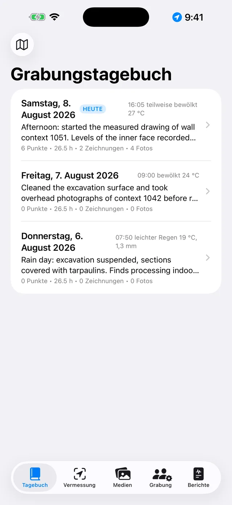
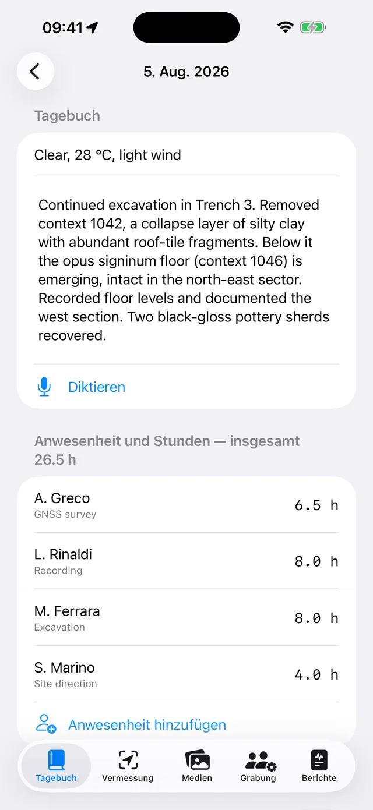
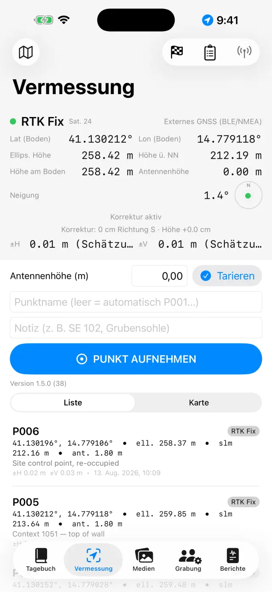
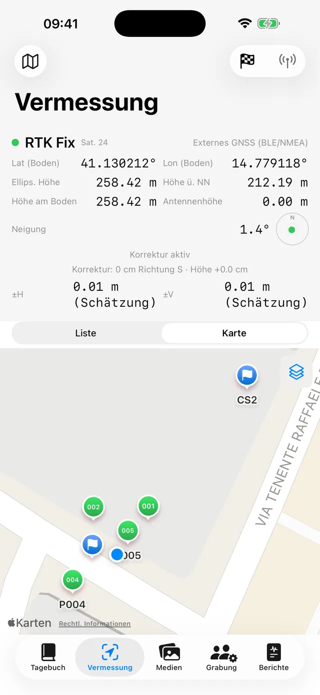
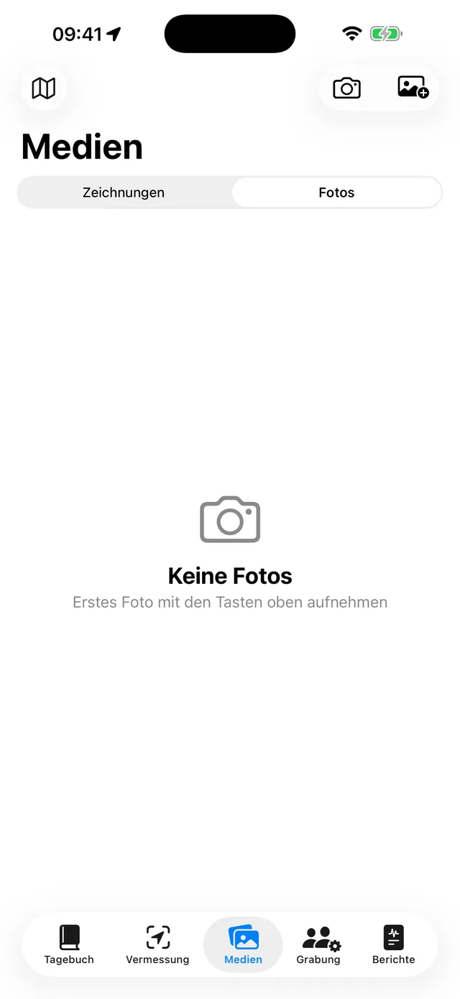
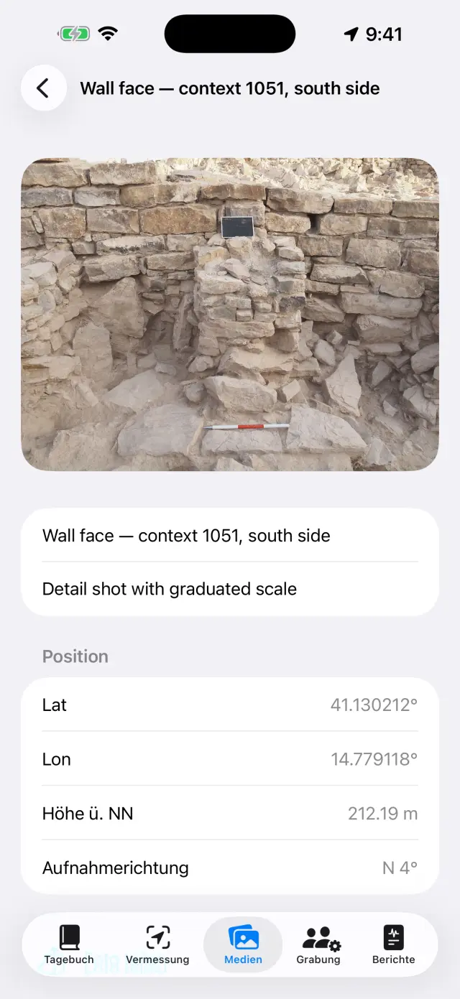
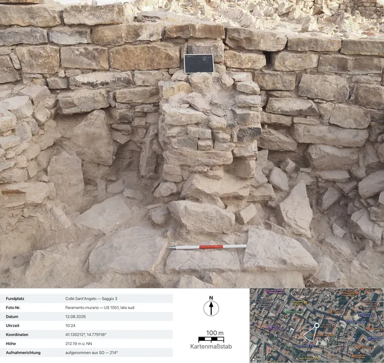
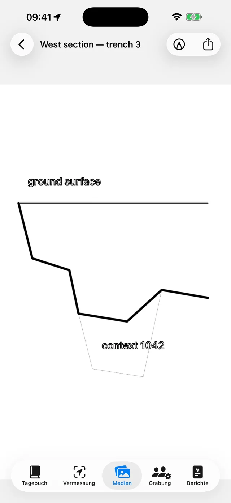
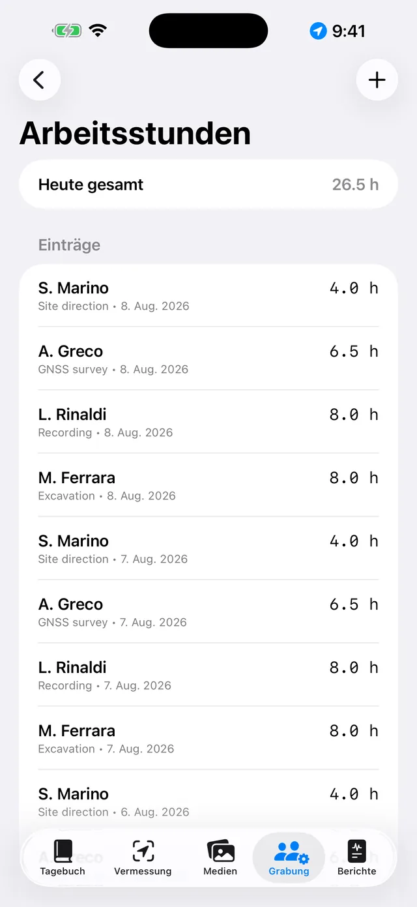
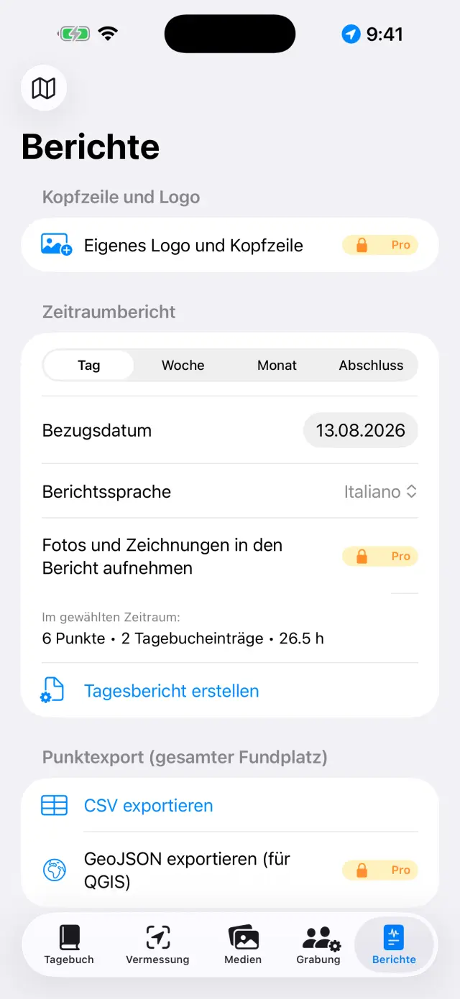

Das digitale Grabungstagebuch für iPhone und iPad. 100 % offline: Ihre Daten bleiben auf dem Gerät.
Kurz gesagt
Eine einzige Idee trägt alles: Jeder Grabungstag ist eine Seite,
die sich von selbst füllt. Sie erfassen die Dinge dort, wo sie hingehören — einen
GNSS-Punkt in der Vermessung, ein Foto in den Medien, Stunden in der Grabung —
und die Tagesseite im Tagebuch sammelt alles automatisch. Am Ende der
Woche oder der Grabung entstehen die Berichte von selbst aus den Seiten.
Ein typischer Tag
MorgensTagesseite öffnen, Wetter und Tagebuch notieren (oder mit Diktieren sprechen)
TeamIn der Grabung Anwesenheit und Stunden erfassen
VermessungGNSS-Punkte aufnehmen; bei RTK zuerst einen Festpunkt prüfen
FotosAus den Medien fotografieren: Koordinaten werden automatisch angehängt
ZeichnungenProfil oder Planum auf einem Foto durchpausen (digitales Transparentpapier)
AbendsUnter Berichte den Tagesbericht erzeugen: ein PDF, fertig zum Versand
Erste Schritte
Beim ersten Start finden Sie einen Beispiel-Fundplatz. Für einen eigenen
tippen Sie oben auf den Namen (Symbol 🗺) → Neuer Fundplatz…
und vergeben einen Namen (z. B. „Colle Sant'Angelo — Schnitt 3“).
Der Name des aktiven Fundplatzes ist oben immer sichtbar: Alle Reiter zeigen
dessen Daten. Zum Wechseln tippen Sie erneut auf den Namen: Die Liste steht
unter der Überschrift „Ihre Fundplätze“, und mit Fundplatz
umbenennen… korrigieren Sie einen Namen, ohne etwas zu verlieren.
Erteilen Sie die Berechtigungen, wenn Sie gefragt werden:
Standort (für Punkte), Kamera (für Fotos),
Mikrofon (fürs Diktieren), Bluetooth (nur mit externem
Empfänger).
Die fünf Reiter
📓 Tagebuch
Tippen Sie auf einen Tag, um seine Seite zu öffnen: Tagebuch, Wetter, Team,
Punkte, Fotos und Zeichnungen des Tages sind schon da.
Schreiben Sie das Tagebuch oder tippen Sie Diktieren und
sprechen Sie: Die Transkription läuft auf dem Gerät und funktioniert ohne
Netz.
Das Wetter lässt sich von Hand eintragen (z. B. „Klarer Himmel, 28 °C,
leichter Wind“) oder mit Abrufen holen: die App fragt den
norwegischen Wetterdienst nach den aktuellen Bedingungen. Dafür wird ein Netz
benötigt, und es geht nur am heutigen Tag — das Wetter von gestern lässt sich
nicht mehr rekonstruieren. Ein zweites Antippen am Nachmittag fügt eine weitere
Messung hinzu. Was Sie von Hand schreiben, hat immer Vorrang.
Beim Abrufen verlässt nur die auf etwa 11 Meter gerundete Position der
Gegend das Gerät; in den Berichten erscheint die Zeile in der Sprache des
Berichts.

Die Liste der Grabungstage

Die Seite eines Tages
📍 Vermessung
Das Feld oben zeigt die Live-Position: Koordinaten, Höhen, Genauigkeit und
Fix-Typ (GPS / RTK Float / RTK Fix).
Bei Lotstab die Antennenhöhe (m) eintragen: Die Punkthöhe wird
automatisch auf den Boden reduziert.
Tippen Sie auf Punkt aufnehmen. Die Namen laufen fortlaufend
(P001, P002…), eigene Namen (z. B. „Bef. 102 — Grubensohle“) und Notizen sind
möglich.
Wechseln Sie zwischen Liste und Karte; in der Karte
lassen sich Kataster- oder andere WMS-Dienste einblenden.
Festpunkte (🏁) haben ihren eigenen Bereich: aus CSV importieren oder
anlegen, dann die Live-Kontrolle öffnen und mit der Spitze auf dem
Nagel die Abweichungen ΔN/ΔE/ΔH kontrollieren, bevor Sie zu messen
beginnen.
Unter Nivellierbücher steht das Feldbuch für das
Nivelliergerät: Stationen, Rück- und Vorblicke, ab einem Ausgangsfestpunkt
berechnete Höhen, mit Kontrolle des Schlussfehlers. Nivellierte Punkte kommen
mit ihrer Höhe in den Fundplatz, genau wie GNSS-Punkte.
Unter dem Feld stehen die NMEA-Aufzeichnungen: Der Rohdatenstrom
des externen Empfängers PRO landet von selbst in einer
Datei — die Aufzeichnung beginnt, wenn Sie die Antenne einschalten, und endet,
wenn Sie sie ausschalten, ohne dass Sie daran denken müssen. Das dient zum
Nachlesen eines zweifelhaften Tages oder zur Übergabe der Rohdaten an die
Nachbearbeitung. Die Dateien lassen sich teilen und löschen, bis auf die
gerade laufende Aufzeichnung; die Liste öffnet sich auch bei ausgeschaltetem
Empfänger, so bleiben die Dateien von gestern erreichbar.

Das GNSS-Feld der Vermessung

Punkte und Festpunkte auf der Karte
Jeder Punkt speichert beide Höhen:
ellipsoidisch und orthometrisch (ü. NN). Mit dem internen GPS des Telefons kann
die orthometrische Höhe fehlen — dafür braucht es einen externen Empfänger
(siehe unten).
📷 Medien
Fotografieren Sie mit der Kamerataste oder importieren Sie aus der
Fotobibliothek.
Fotos werden fortlaufend benannt (F001, F002…) und mit der letzten
GNSS-Position georeferenziert.
Beim Auslösen zeichnet die App auch die Aufnahmerichtung
vom Kompass auf: In der Fotodetailansicht und in den Berichten lesen Sie
„aufgenommen aus SO — 214°“, und bei senkrecht aufgenommenen Fotos (Planum,
Sohle eines Befunds) die Nadir-Angabe mit der Richtung der Oberkante. Ist der
Kompass gestört, sagt die App das.
Tippen Sie auf ein Foto für Titel und Notizen (z. B. „Bef. 102 von
Norden“).
Fotoblatt teilenPRO erzeugt das
Foto-Dokumentationsblatt: das Foto mit den Aufnahmedaten
darunter (Fundplatz, Nummer, Datum und Uhrzeit, Koordinaten, Höhe, Richtung),
eine Satellitenansicht mit Markierung und Aufnahmekegel, dem Kartenmaßstab
und dem Nordpfeil. Die Karte braucht ein Netz: ohne Netz entsteht das Blatt
trotzdem, mit einem größeren Datenfeld.

Die Fotogalerie

Die Fotodetailansicht: Koordinaten, Höhe und Aufnahmerichtung

Das exportierte Blatt: die Aufnahmedaten, die Satellitenansicht mit dem Aufnahmekegel, der Kartenmaßstab und der Nordpfeil
✏️ Zeichnungen (in den Medien)
Neues Blatt anlegen und ein Grabungsfoto als Hintergrund wählen: Ihr
digitales Transparentpapier. Eine Zeichnung kann sich über mehrere Tage
erstrecken. Man kann das Foto auch weglassen: Auf dem weißen Blatt zeichnet
es sich genauso.
Schichten, Befunde und Steine mit dem Finger oder dem Apple Pencil
durchpausen. Mit zwei Fingern zoomen (bis 6×, Doppeltipp mit
zwei Fingern für zurück auf 1×). Verdeckt das Foto Ihre Linien, wählen Sie im
Kameramenü Deckkraft des Hintergrunds… und regeln Sie sie nach
Bedarf, von 5% bis 100%: Es blasst das Foto aus, nicht die Zeichnung. Die
Wahl bleibt am Blatt und gilt auch in PDF, DOCX, PNG und bei Mit Legende
exportieren.
Alles Übrige steht unter Werkzeuge (der Schraubenschlüssel in
der Leiste), dem Verzeichnis der sechs Modi: Textfeld,
NachzeichnenPRO, Fotomaßstab,
Punkt mit Höhe, Schraffur und Linienstil. Es
gilt immer nur einer: Das Häkchen sagt, welcher, und solange
er an ist, zeichnet der Finger nicht, sondern steuert dieses Werkzeug — zum
Zeichnen tippen Sie den angehakten Eintrag erneut an. Die drei Einträge, die
am Bild arbeiten (Nachzeichnen, Maßstab, Punkt mit Höhe), erscheinen nur, wenn
ein Hintergrundfoto da ist.
Mit Textfeld setzen Sie die Beschriftungen (z. B. „Bef. 1002“):
Sie lassen sich verschieben, mit zwei Fingern skalieren und bieten vier
Schriftarten zur Auswahl.
NachzeichnenPRO erkennt die Kontur des
Objekts, das Sie antippen (ein Stein, die Grenze einer Schicht), und verwandelt
sie in eine Linie: Farbe, Strichstärke und Linienstil lassen sich ändern, ohne
den Modus zu verlassen, und die Konturen kommen glatt heraus statt treppig.
Alles geschieht auf dem Gerät, ohne Netz.
Im Nachzeichnen geht Alles nachzeichnenPRO das ganze Foto von allein durch. Im Startblatt
bestimmen Sie das Aussehen — Nur Umrisse, oder eine Schraffur und
vielleicht ein Farbschleier — und drücken Starten: Die
Leiste sagt, wie weit es ist, und es dauert einige Dutzend Sekunden. Was
erscheint, ist eine Vorschau, nicht die Zeichnung: Ein Tipp in
eine Form schließt sie aus, ein weiterer nimmt sie wieder auf (bei
überlappenden Formen gewinnt die kleinste unter dem Finger),
Feindurchgang geht nur dort noch einmal durch, wo nichts gefunden
wurde, und Anwenden setzt das Verbliebene auf die Zeichnung. Bis Sie
anwenden, bleibt das Blatt unberührt.
Mit dem Werkzeug Fotomaßstab (Lineal) tippen Sie die beiden
Enden eines bekannten Maßes an — ein Abschnitt der Messlatte — und geben die
wahre Entfernung ein: Das Foto erhält den Maßstab, und ab da sprechen die
Exporte in Metern.
Mit Punkt mit Höhe setzen Sie auf dem Foto das Fadenkreuz
eines GNSS-Punkts des Fundplatzes (oder eines von Hand eingegebenen Punkts):
Name, Höhe und Koordinaten erscheinen in einem verschiebbaren Etikett mit
Hinweislinie. Mit zwei Fingern auf dem ausgewählten Etikett machen Sie es
kleiner oder größer, wenn die Werte die Zeichnung verdecken.
Die Schraffur füllt die Formen: Sie tippen
innerhalb einer geschlossenen Form, und sie füllt sich. Es
gibt die zehn Konventionsschraffuren — Mauerwerk / Stein,
Ziegel, Mörtel / Putz, Ton,
Schluff, Sand, Kies, Holzkohle /
Asche, Anstehender Fels, Holz — und den
Farbschleier (eine Farbe mit eigener Deckkraft), einzeln oder
zusammen. Liegt eine Form in einer anderen, gewinnt die kleinste unter dem
Finger; Füllung entfernen räumt sie wieder ab. Ein Foto braucht es
dafür nicht: Die Füllung arbeitet an den gezeichneten Formen, also auch auf dem
weißen Blatt.
Der Linienstil kleidet eine bereits gezeichnete
Linie ein: Sie tippen sie an und wählen zwischen Durchgezogen,
Gestrichelt, Gepunktet und Strichpunkt, samt
Strichstärke. Mit diesem Stil zeichnen lässt die folgenden Linien
gleich eingekleidet entstehen; Stil entfernen macht die Linie wieder
voll. Das ist kein Bildschirmeffekt: Die Striche sind echte Segmente und
bleiben es in PDF, DOCX, PNG, SVG und DXF.
Mit Legende exportierenPRO: Das Bild
bekommt unten einen weißen Streifen — Maßstabsbalken (falls der Maßstab
gesetzt ist), Nordpfeil bei senkrecht aufgenommenen Fotos, „aufgenommen
aus“ bei Frontalaufnahmen.
Als Vektor exportierenPRO: SVG für
die Zeichnung, oder DXF fürs GIS. Mit mindestens zwei
Punkten mit Höhe und Koordinaten auf einem senkrecht aufgenommenen Foto kommt
das DXF in UTM georeferenziert heraus und positioniert sich
in QGIS von selbst; nur mit dem Maßstab kommt es in lokalen Metern heraus;
ohne beides sagt die App das und erzeugt keine Datei ohne Einheit. Beim SVG
gilt die Deckkraft nicht: Es bettet das Originalfoto unverändert ein, also
kommt der abgeschwächte Hintergrund dort in voller Stärke heraus.
Am Ende das Foto ausblenden: Die saubere Zeichnung bleibt, fertig für den
Bericht.

Das digitale Transparentpapier
👷 Grabung
Anwesenheit des Tages erfassen: Name, Aufgabe und Stunden jeder Person.
Geräte-Inventar führen, samt Zuordnung.

Team und Stunden
📄 Berichte
Typ wählen: täglich (gratis, mit Wasserzeichen),
wöchentlich, monatlich oder
Abschlussbericht mit vollständigen Anhängen
PRO.
Berichtssprache aus siebzehn wählen, unabhängig von der
App-Sprache: der Bericht kann auf Italienisch erscheinen, auch wenn Sie die App
auf Deutsch verwenden.
PDF erzeugen, oder DOCX mit Logo und Fotos exportieren
PRO, CSV der Punkte, GeoJSON für QGIS
PRO.
Bei aktivierten Fotos in Berichten können Sie Fotoblätter statt
FotosPRO wählen: Jedes Foto kommt als
vollständiges Dokumentationsblatt mit Daten und Karte ins PDF und DOCX, in
der Sprache des Berichts.

Berichte erzeugen
Externer GNSS-Empfänger und NTRIP
Mit einem externen Empfänger (zentimetergenaue Antenne) erreicht die App
RTK-Genauigkeit. Das interne GPS bleibt immer als Rückfallebene verfügbar.
Empfänger einschalten und Bluetooth am Telefon aktivieren.
In der Vermessung die Positionsquelle wählen: Externes GNSS
(BLE/NMEA)PRO und den Empfänger aus der Liste
auswählen. Auch MFi-Empfänger (gratis) und Empfänger mit NMEA über Netzwerk
werden unterstützt.
Für RTK-Korrekturen NTRIP einrichten: Caster-Adresse,
Port, Mountpoint, Benutzer und Passwort (bleiben im Schlüsselbund des Geräts).
Die App sendet die Position an den Caster und empfängt die Korrekturen.
Auf RTK Fix warten: Zentimetergenauigkeit. Vor Beginn an
einem Festpunkt prüfen.
Wo das Telefon keinen Empfang hat, gibt es auch den Weg
ohne Internet: eine auf einem bekannten Punkt aufgestellte
Basis und ein Rover, die die Korrekturen per LoRa-Funk
austauschen, ohne Caster und ohne SIM (RTK-Kit von DFRobot mit ESP32-Brücke).
Für die App ändert sich nichts — sie empfängt vom Empfänger ein bereits
korrigiertes NMEA —, und der Aufbau der Brücke ist gesondert dokumentiert, in
ihrer eigenen README: Dies bleibt eine Anleitung zur App, kein
Firmware-Handbuch.
Sicherung und Austausch
Im Fundplatz-Menü Fundplatz exportieren (.zip) antippen: Alles
ist enthalten — Tagebuch, Punkte, Fotos, Zeichnungen, Stunden, Festpunkte.
Die ZIP-Datei beliebig aufbewahren (Dateien, Drive, E-Mail…). Sie ist Ihre
Sicherung: Die App hat bewusst keine Cloud.
Fundplatz importieren (.zip)… stellt den Fundplatz auf einem
anderen Gerät wieder her, auch zwischen iPhone und Android.
⚠️ Fundplatz löschen… entfernt den Fundplatz mit
allem Inhalt und ist unumkehrbar: im Zweifel vorher eine ZIP
exportieren.
Gratis und Pro
Gratis
Pro
Fundplätze
1
Unbegrenzt
GNSS
Internes GPS, MFi-Empfänger
+ BLE/NMEA, NTRIP
Berichte
Tagesbericht mit Wasserzeichen
Alle, ohne Wasserzeichen
Export
PDF, CSV
+ DOCX mit Logo und Fotos, GeoJSON
Zeichnungen
Transparentpapier, Zoom, Textfelder, Maßstab, Punkte mit Höhe, Schraffuren, Linienstile, Deckkraft des Hintergrunds
+ Mit Legende exportieren, SVG/DXF
Automatisches Nachzeichnen
—
Per Tipp und „Alles nachzeichnen“
NMEA-Aufzeichnungen
Nachlesen und Teilen der Dateien
Die Aufzeichnung (braucht die externe Antenne)
Nivellierbücher
✓
✓
Fotoblatt
—
Teilen und Blätter in Berichten
Diktierfunktion
✓
✓
Berichtssprachen
17
17
Pro gibt es als Monats- oder Jahresabo mit automatischer Verlängerung oder
als einmaligen Lifetime-Kauf. Verwaltung und Kündigung jederzeit in den
Einstellungen des Apple-Kontos.
Problemlösung
Der Bluetooth-Empfänger erscheint nicht oder verbindet sich nicht
Prüfen Sie der Reihe nach:
Der Empfänger ist eingeschaltet und nicht schon mit einer anderen App oder
einem anderen Telefon verbunden.
Bluetooth ist aktiv und die App hat die Bluetooth-Berechtigung
(Einstellungen → Giornale di Scavo).
Als Quelle ist in der Vermessung Externes GNSS (BLE/NMEA)
gewählt.
Empfänger aus- und einschalten, dann erneut suchen.
Ich erreiche nie RTK Fix
Es braucht eine aktive NTRIP-Verbindung: Caster, Mountpoint und Zugangsdaten
prüfen.
Mobilfunkabdeckung prüfen: Die Korrekturen kommen über das Internet.
Freier Himmel zählt: dichte Bäume und nahe Wände verschlechtern das Signal.
Bei schlechten Bedingungen bleibt es u. U. bei RTK Float (Dezimeter).
Einen nahen Mountpoint (< 30–40 km) oder ein VRS-Netz wählen.
NTRIP verbindet sich nicht
Adresse und Port (oft 2101) prüfen, und ob der Mountpoint existiert: Die
meisten Caster veröffentlichen die Liste (Sourcetable).
Falscher Benutzer oder falsches Passwort ergibt 401/403: Zugangsdaten
kontrollieren.
Manche Netze verlangen die Position (GGA): Die App sendet sie automatisch,
der Empfänger braucht aber zuerst einen Fix.
Die Höhe ü. NN ist leer oder null
Das Telefon-GPS liefert nur die ellipsoidische Höhe. Die orthometrische Höhe
(ü. NN) kommt aus der GGA-Meldung eines externen Empfängers. Ohne Empfänger
wird trotzdem die ellipsoidische Höhe gespeichert.
Das Diktieren funktioniert nicht
Berechtigungen für Mikrofon und Spracherkennung in den Einstellungen
prüfen.
Die Transkription läuft auf dem Gerät: Beim ersten Mal lädt das System ggf.
das Sprachmodell (einmalig Netz nötig, danach offline).
In kurzen Sätzen sprechen; der Text wird ans Tagebuch angehängt.
Die Katasterkarte (WMS) erscheint nicht
Die App ist offline, WMS-Ebenen sind aber Webdienste: Sie brauchen eine
Verbindung und einen funktionierenden Dienst. Das italienische Kataster ist
vorkonfiguriert; für andere Länder den WMS-Endpunkt des nationalen Dienstes
eintragen (EPSG:3857 erforderlich). Ohne Netz bleiben Basiskarte und Punkte
sichtbar.
Fotos haben keine Koordinaten
Ein Foto übernimmt die Position vom letzten GNSS-Fix: Zuerst die Vermessung
öffnen und auf eine Position warten, dann fotografieren. Ohne
Standort-Berechtigung werden Fotos ohne Koordinaten gespeichert.
Im Bericht fehlen Fotos oder das Logo
Fotos in Berichten, Logo und eigene Kopfzeile gehören zu Pro und gelten für
DOCX und PDF. Der kostenlose Tagesbericht trägt ein Wasserzeichen und enthält
keine Fotos.
Ich habe einen Fundplatz versehentlich gelöscht
Das Löschen ist endgültig: Die Daten sind nicht wiederherstellbar (es gibt
keine Cloud). Mit einer früher exportierten ZIP lässt sich der Stand jenes
Tages wieder importieren. Tipp: am Ende jedes Tages eine ZIP
exportieren.
Ich habe Pro gekauft, es ist aber noch gesperrt
Auf dem Pro-Bildschirm Käufe wiederherstellen antippen, mit
demselben Apple-Konto wie beim Kauf. Nach einem Gerätewechsel stellt das die
Mitgliedschaft oder die Lifetime-Lizenz wieder her.
„Abrufen“ ist ausgegraut oder meldet „Wetter nicht verfügbar“
ist die Schaltfläche ausgegraut, befinden Sie sich auf der Seite eines
vergangenen Tages: Wetter lässt sich nur am heutigen Tag abrufen;
erscheint „Wetter nicht verfügbar“, fehlt das Netz, oder die Grabung hat
noch keinen GNSS-Punkt, aus dem die Position stammen könnte — messen Sie einen
Punkt und versuchen Sie es erneut.
Das Fotoblatt kommt ohne Karte heraus
Die Satellitenansicht stammt von Apple und braucht ein Netz: Die App
wartet bis zu 15 Sekunden, dann erzeugt sie das Blatt ohne Karte (die Daten
warten nicht auf das Netz). Bei langsamen Netzen auf der Grabung kann die
ganze Wartezeit nötig sein: unter WLAN erneut versuchen. Ohne Koordinaten im
Foto gibt es die Karte grundsätzlich nicht.
„Alles nachzeichnen“ findet nichts, oder findet zu viel
der Durchgang arbeitet am Hintergrundfoto: ohne Foto gibt es den Befehl
nicht, und solange „Foto wird vorbereitet…“ zu lesen ist, ist das Modell noch
nicht bereit — warten Sie;
sind es zu wenige Formen, drücken Sie Feindurchgang: Er geht mit
einem dichteren Raster nur dort noch einmal durch, wo der erste nichts gesehen
hatte, und fügt hinzu, was er findet, ohne das Ausgeschlossene
zurückzuholen;
sind es zu viele, wenden Sie nicht alles an: Tippen Sie in der Vorschau die
überzähligen Formen einzeln an, um sie auszuschließen, dann
Anwenden. Was Sie ausschließen, kommt nicht auf die Zeichnung;
flaue Fotos — wenig Kontrast, Mittagslicht, Boden durchweg in derselben
Farbe — geben zwangsläufig wenige Konturen: Dort ist das Nachzeichnen mit
einzelnem Tipp besser, denn es weiß, wohin Sie schauen;
bleibt eine Menge winziger Formen übrig, versuchen Sie es erneut mit
Nur Umrisse: Die lesen sich besser, und die Schraffur lässt sich
immer noch später von Hand auftragen.
Die Linie lässt sich nicht einkleiden
der Tipp sucht die nächstgelegene Linie im Umkreis einer Fingerkuppe: Ist
die Linie dünn oder die Stelle voll, zoomen Sie und tippen Sie
genauer, direkt auf die Tinte;
eingekleidet werden nur Linien. Füllungen, Textfelder und
die Fadenkreuze der Punkte mit Höhe sind keine Linien und antworten unter dem
Finger nicht;
erscheint „Dieser Strich lässt sich nicht neu gestalten“, ist unter den
Linien, die der Tipp erfasst hat, eine, die keine Linie ist: der Punkt, den ein
stehender Tipp hinterlässt, oder eine Linie, die beschädigt aus einem
importierten Archiv kam. Löschen Sie den Punkt und versuchen Sie es erneut,
oder tippen Sie die Linie an einer weiter entfernten Stelle an. Ein einzelner
Punkt lässt sich schlicht nicht einkleiden: Aus einem Punkt wird keine
gestrichelte Linie;
haben Sie zwischen dem Tipp und Anwenden etwas widerrufen oder
etwas anderes gezeichnet, löst sich die Auswahl von selbst, um nicht die
falsche Linie einzukleiden: Tippen Sie die Linie erneut an und versuchen Sie es
noch einmal.
Die Schraffur erscheint nicht, wenn ich in die Form tippe
die Form muss geschlossen sein, und zwar durch
eine einzige Linie: Beginnen Sie und kehren Sie fast zum
selben Punkt zurück, ohne den Finger abzuheben (ein paar Millimeter Abstand
sind erlaubt). Zwei Linien, die sich an den Enden berühren, bleiben zwei
offene Linien, und ein Blatt über eine Kante hinaus zu fluten, die niemand
gezeichnet hat, wäre schlimmer, als es gar nicht zu füllen;
die vom Nachzeichnen erzeugten Konturen sind bauartbedingt
geschlossen: Die füllen sich immer;
liegen die Formen ineinander, nimmt der Tipp die kleinste,
die ihn enthält — um die große zu füllen, tippen Sie an einer Stelle außerhalb
der kleinen;
haben Sie in die Form getippt und nicht auf ihren Rand? Das Ziel ist die
Fläche, nicht die Linie.
Das DXF wird abgelehnt, oder öffnet sich „in der Nähe des Ursprungs“ im GIS
für ein georeferenziertes DXF sind ein mit der
App-Kamera senkrecht aufgenommenes Foto und mindestens zwei gut
verteilte Punkte mit Höhe und Koordinaten auf dem Foto nötig;
nur mit dem Maßstab der Messlatte kommt das DXF in lokalen
Metern heraus: das ist korrekt, aber das GIS zeigt es in der Nähe
des Ursprungs — die App sagt das vorher;
ohne Maßstab und ohne Punkte wird der Export verweigert: ein DXF ohne
Einheit wäre in keinem GIS sinnvoll lesbar.
Ich habe den Hintergrund abgeschwächt, aber das SVG kommt mit dem vollen Foto
Das ist so und bleibt so: Das SVG trägt die Originaldatei
des Fotos in sich, keine ausgeblasste Kopie davon, und sie aufzuhellen hieße,
sie neu zu komprimieren — sie also für alle zu verschlechtern, die das SVG zum
Arbeiten öffnen. Deckkraft des Hintergrunds… gilt im Editor, im PDF,
im DOCX, im PNG und bei Mit Legende exportieren. Brauchen Sie das
Vektorbild ohne Foto, wählen Sie SVG — nur die Zeichnung; brauchen
Sie das abgeschwächte Foto, exportieren Sie als PNG oder gehen Sie über den
Bericht.
Der Nordpfeil erscheint nicht bei „Mit Legende exportieren“
Der Pfeil erscheint nur bei Fotos, die mit der App-Kamera
senkrecht aufgenommen wurden, da nur dabei der Azimut mit
aufgezeichnet wird. Bei Frontalaufnahmen erscheint stattdessen der Schriftzug
„aufgenommen aus …“ (ein Nordpfeil auf der Fläche eines Aufrisses wäre
geometrisch unsinnig); bei aus der Fotobibliothek importierten Fotos fehlt
beides, weil die Aufnahmedaten fehlen.